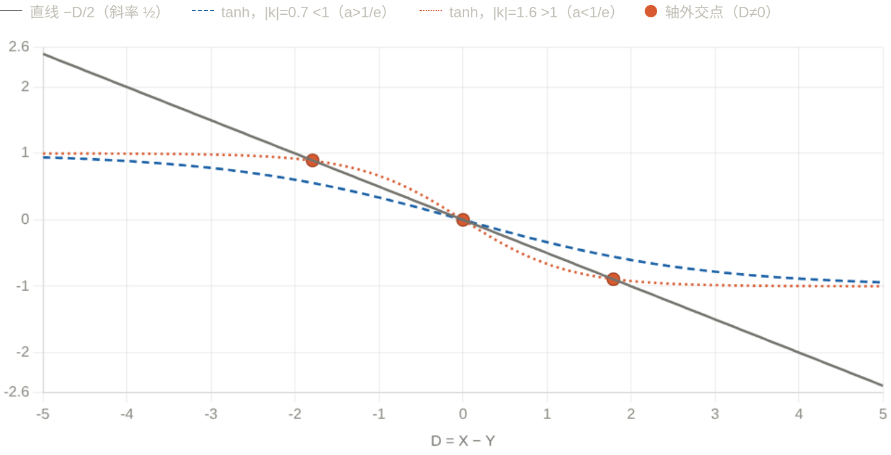

<meta data-alternate="https://freshmark.sunisalex.org/posts/math/LYW-math-lessons-review/001/" data-article="true" data-canonical="https://freshmark.sunisalex.org/en/posts/math/LYW-math-lessons-review/001/" data-description="Notes for curious people." data-freshmark-page data-title="Class Review 1 — Freshmark"><main><header class="container article-header"><a href="/en/" class="back-link">← Back to all writing</a><p class="eyebrow article-subject">draft</p><h1>Class Review 1</h1><p class="article-dek"></p><div class="article-meta"><time datetime="2026-06-05">June 5, 2026</time><span>8 min read</span><span>draft</span><span class="view-count" data-article-view-count hidden>Article views <strong data-article-views></strong></span><a href="index.md" download>Download Markdown</a><button type="button" class="article-share" data-share-article data-share-text="" data-share-title="Class Review 1"><span data-share-label>Share article</span></button><output aria-live="polite" class="visually-hidden" data-share-status role="status"></output></div></header><div class="article-wrap"><aside class="toc"><div class="toc-head"><p>On this page</p><button type="button" class="toc-toggle" aria-expanded="false" aria-label="Toggle table of contents" data-toc-toggle><span class="toc-toggle-label">Table of contents</span><span class="toc-toggle-icon" aria-hidden="true"></span></button></div><nav aria-label="Table of contents" class="toc-links" data-toc-links><a href="#example-1-analytical-algebra" class="toc-level-3">Example 1: Analytical Algebra</a><a href="#mathematical-background-hyperbolic-trigonometric-functions" class="toc-level-2">Mathematical background: hyperbolic trigonometric functions</a><a href="#example-2" class="toc-level-3">Example 2</a><a href="#example-3" class="toc-level-3">Example 3</a></nav></aside><article class="prose"><!--more--><h3 id="example-1-analytical-algebra">Example 1: Analytical Algebra</h3><p>It is known that the ellipse <span class="math-expression math-inline" data-math-source="C:\frac{x^2}{4}+\frac{y^2}{3}=1"></span>&#32;and the function <span class="math-expression math-inline" data-math-source="y=m^{x+1}+n(m\ge 2)"></span>&#32;intersect the ellipse at two points <span class="math-expression math-inline" data-math-source="A,B"></span>, and find the maximum value of <span class="math-expression math-inline" data-math-source="n"></span>.</p><p>Assume <span class="math-expression math-inline" data-math-source="A(x_0,y_0),B(-x_0,-y_0),x_0\in(0,2),y_0\in(0,\sqrt{3})"></span>, there are: <span class="math-expression math-display" data-math-source="\begin{cases} y_0=m^{x_0+1}+n,(1)\\ -y_0=m^{-x_0+1}+n,(2)\\ \frac{x_0^2}{4}+\frac{y_0^2}{3}=1,(3) \end{cases}" data-math-display></span> Considering that there are a total of four variables <span class="math-expression math-inline" data-math-source="x_0,y_0,m,n"></span>&#32;and three constraints, there are <span class="math-expression math-inline" data-math-source="4-3=1"></span>&#32;degrees of freedom.</p><p>Obviously if the scope of one of the variables can be determined, the scope of the other variables will be easily determined:</p><p>In order to <strong>use symmetry</strong> while obtaining <strong>identical deformation</strong>, consider (1)+(2) and (1)-(2), then the <strong>sufficient and necessary conditions</strong> are:</p><p><span class="math-expression math-display" data-math-source="\begin{cases} -2n=m(m^{x_0}+m^{-x_0}),(4)\\ 2y_0=m(m^{x_0}-m^{-x_0}),(5)\\ \frac{x_0^2}{4}+\frac{y_0^2}{3}=1,(3) \end{cases}" data-math-display></span></p><p>Make a few simple observations:</p><ul><li>It is easy to see from (4) that <span class="math-expression math-inline" data-math-source="n\lt 0"></span>.</li><li>In (4), <span class="math-expression math-inline" data-math-source="m^{x_0}\gt 1"></span>, then <span class="math-expression math-inline" data-math-source="m"></span>&#32;is larger, <span class="math-expression math-inline" data-math-source="-2n"></span>&#32;is smaller, and <span class="math-expression math-inline" data-math-source="n"></span>&#32;is larger</li><li>In (5), the larger m is, the smaller 2y_0 is, and <span class="math-expression math-inline" data-math-source="m\ge 2"></span>&#32;can be eliminated by scaling <span class="math-expression math-inline" data-math-source="m"></span></li></ul><p>So, we further perform <strong>lossless scaling</strong> (m=2):</p><p><span class="math-expression math-display" data-math-source="\begin{cases} -2n\ge 2(2^{x_0}+2^{-x_0}),(6)\\ 2y_0\ge 2(2^{x_0}-2^{-x_0}),(7)\\ \frac{x_0^2}{4}+\frac{y_0^2}{3}=1\ge \frac{x_0^2}{4}+\frac{2^{2x_0}+2^{-2x_0}-2}{3},(\alpha) \end{cases}" data-math-display></span></p><p>(<span class="math-expression math-inline" data-math-source="\alpha"></span>) is the key to solving the problem! It is not difficult to see that <span class="math-expression math-inline" data-math-source="\frac{x_0^2}{4}+\frac{2^{2x_0}+2^{-2x_0}-2}{3}"></span>&#32;is monotonically increasing with respect to <span class="math-expression math-inline" data-math-source="x_0"></span>, and the solution is <span class="math-expression math-inline" data-math-source="x_0\le 1"></span>.</p><p>So according to (6) we have:</p><p><span class="math-expression math-display" data-math-source="\begin{gathered} n\le -(2^{x_0}+2^{-x_0})\le -\frac{5}{2} \end{gathered}" data-math-display></span></p><p><strong>Correction and another ending (added by Claude)</strong></p><blockquote><p>This section was added by Claude, an AI model made by Anthropic, after the author's solution. It is not written by the original author.</p></blockquote><p>The last step above needs <span class="math-expression math-inline" data-math-source="2^{x_0}+2^{-x_0}\ge\frac52"></span>, i.e. <span class="math-expression math-inline" data-math-source="x_0\ge1"></span>, but (<span class="math-expression math-inline" data-math-source="\alpha"></span>) gave <span class="math-expression math-inline" data-math-source="x_0\le1"></span>, the opposite direction. The maximum of <span class="math-expression math-inline" data-math-source="n"></span>&#32;is indeed <span class="math-expression math-inline" data-math-source="-\frac52"></span>&#32;(at <span class="math-expression math-inline" data-math-source="m=2"></span>, <span class="math-expression math-inline" data-math-source="x_0=1"></span>); it just needs a different finish. As the author hints later, square (4) and (5) and subtract:</p><p><span class="math-expression math-display" data-math-source="(-2n)^2-(2y_0)^2=m^2\Bigl[(m^{x_0}+m^{-x_0})^2-(m^{x_0}-m^{-x_0})^2\Bigr]=4m^2
\quad\Longrightarrow\quad n^2=m^2+y_0^2 ." data-math-display></span></p><p>The author's (<span class="math-expression math-inline" data-math-source="\alpha"></span>) gives <span class="math-expression math-inline" data-math-source="x_0\le1"></span>&#32;for every <span class="math-expression math-inline" data-math-source="m\ge2"></span>, so <span class="math-expression math-inline" data-math-source="y_0=\sqrt3\sqrt{1-\frac{x_0^2}{4}}\ge\sqrt3\cdot\frac{\sqrt3}{2}=\frac32"></span>. Since <span class="math-expression math-inline" data-math-source="n&lt;0"></span>,</p><p><span class="math-expression math-display" data-math-source="n=-\sqrt{m^2+y_0^2}\le-\sqrt{4+\tfrac94}=-\frac52," data-math-display></span></p><p>with equality exactly when <span class="math-expression math-inline" data-math-source="m=2,\ x_0=1,\ y_0=\frac32"></span>. I also checked numerically that <span class="math-expression math-inline" data-math-source="n"></span>&#32;decreases as <span class="math-expression math-inline" data-math-source="m"></span>&#32;grows from <span class="math-expression math-inline" data-math-source="2"></span>.</p><h2 id="mathematical-background-hyperbolic-trigonometric-functions">Mathematical background: hyperbolic trigonometric functions</h2><p><picture class="responsive-picture"><source srcset="image.freshmark-cb013373661f-382w.avif 382w" type="image/avif"><source srcset="image.freshmark-cb013373661f-382w.webp 382w" type="image/webp"></picture></p><p><picture class="responsive-picture"><source srcset="image-1.freshmark-0c519359f0c7-480w.avif 480w, image-1.freshmark-0c519359f0c7-960w.avif 960w, image-1.freshmark-0c519359f0c7-1440w.avif 1440w" type="image/avif"><source srcset="image-1.freshmark-0c519359f0c7-480w.webp 480w, image-1.freshmark-0c519359f0c7-960w.webp 960w, image-1.freshmark-0c519359f0c7-1440w.webp 1440w" type="image/webp"></picture></p><p>Hyperbolic trigonometric functions are derived from hyperbola <span class="math-expression math-inline" data-math-source="x^2-y^2=1"></span>, so they are called <strong>hyperbolic functions</strong></p><p><span class="math-expression math-display" data-math-source="\begin{cases} \sinh x=\frac{e^x-e^{-x}}{2},\\ \cosh x=\frac{e^x+e^{-x}}{2}\ge 1,\\ \tanh x=\frac{\sinh x}{\cosh x}=\frac{e^x-e^{-x}}{e^x+e^{-x}}=\frac{e^{2x}-1}{e^{2x}+1}\lt 1 \end{cases}" data-math-display></span></p><p>Similar to trigonometric functions, hyperbolic functions have corresponding identity transformation formulas:</p><p><span class="math-expression math-display" data-math-source="\begin{gathered} \cosh^2 x-\sinh^2 x=1,\\ \cosh^2 x+\sinh^2 x=\cosh 2x,\\ \sinh(x+y)=\sinh x\cosh y+\cosh x\sinh y\\ \sinh(x-y)=\sinh x\cosh y-\cosh x\sinh y\\ \cosh(x+y)=\cosh x\cosh y+\sinh x\sinh y\\ \cosh(x-y)=\cosh x\cosh y-\sinh x\sinh y\\ \tanh(x+y)=\frac{\tanh x+\tanh y}{1+\tanh x\tanh y}\\ \tanh(x-y)=\frac{\tanh x-\tanh y}{1-\tanh x\tanh y}\\ \end{gathered}" data-math-display></span></p><p>For details, see <a href="https://en.wikipedia.org/wiki/Hyperbolic_functions">Wikipedia</a>.</p><p>When dealing with Example 1 (4) (5), you can also use the analogy of <span class="math-expression math-inline" data-math-source="\cosh^2 x-\sinh^2 x=1"></span>&#32;and consider the squares and then add them.</p><h3 id="example-2">Example 2</h3><p>If <span class="math-expression math-inline" data-math-source="f(x)=a^{x-1}"></span>&#32;and <span class="math-expression math-inline" data-math-source="g(x)=\log_a x+1"></span>&#32;have three intersection points, find the value range of <span class="math-expression math-inline" data-math-source="a"></span>:</p><p>When <span class="math-expression math-inline" data-math-source="a\gt 1"></span>, <span class="math-expression math-inline" data-math-source="f(x)=a^{x-1}"></span>&#32;increases monotonically, and <span class="math-expression math-inline" data-math-source="f(x),g(x)"></span>&#32;are inverse functions of each other, then if the intersection point is not on <span class="math-expression math-inline" data-math-source="y=x"></span>:</p><p>Suppose the intersection point is <span class="math-expression math-inline" data-math-source="(x,y)"></span>, then there must be a pair of intersection points <span class="math-expression math-inline" data-math-source="(y,x)"></span>, and as long as <span class="math-expression math-inline" data-math-source="x\neq y"></span>, it is inconsistent with monotonicity.</p><p>This means that <span class="math-expression math-inline" data-math-source="y=a^{x-1}"></span>&#32;as a downward convex function has two intersection points with <span class="math-expression math-inline" data-math-source="y=x"></span>, which obviously leads to a contradiction:</p><p>Therefore, <span class="math-expression math-inline" data-math-source="0\lt a\lt 1"></span>, at this time, there is obviously an intersection point <span class="math-expression math-inline" data-math-source="(1,1)"></span>, and the other two intersection points cannot be on <span class="math-expression math-inline" data-math-source="y=x"></span>, then the two paired intersection points are not on <span class="math-expression math-inline" data-math-source="y=x"></span>, and there is a pair of <span class="math-expression math-inline" data-math-source="(x,y),(y,x)"></span>&#32;that is an intersection point that meets the meaning of the question:</p><p><span class="math-expression math-display" data-math-source="\begin{cases} a^{x-1}=y,(1)\\ a^{y-1}=x,(2) \end{cases}" data-math-display></span></p><p><span class="math-expression math-display" data-math-source="\begin{gathered} a^{x-1}+a^{y-1}=x+y,\\ a^{x-1}-a^{y-1}=y-x \end{gathered}" data-math-display></span></p><p>Let <span class="math-expression math-inline" data-math-source="k=\ln a\lt 0,x-1=u,y-1=v"></span>, then:</p><p><span class="math-expression math-display" data-math-source="\begin{gathered} e^{ku}+e^{kv}=u+v+2,(3)\\ e^{ku}-e^{kv}=v-u,(4) \end{gathered}" data-math-display></span></p><p>Order <span class="math-expression math-inline" data-math-source="u+v=S,u-v=D"></span>&#32;again</p><p><span class="math-expression math-display" data-math-source="\begin{cases} e^{\frac{kS}{2}}(e^{\frac{kD}{2}}+e^{-\frac{kD}{2}})=S+2,(5)\\ e^{\frac{kS}{2}}(e^{\frac{kD}{2}}-e^{-\frac{kD}{2}})=-D,(6) \end{cases}" data-math-display></span></p><p>(5)/(6):</p><p><span class="math-expression math-display" data-math-source="\boxed{\tanh(\frac{kD}{2})=-\frac{D}{S+2}}" data-math-display></span></p><p>The above are the necessary conditions for the existence of <span class="math-expression math-inline" data-math-source="x,y"></span>.</p><p><picture class="responsive-picture"><source srcset="image-2.freshmark-196a4ca1e66c-480w.avif 480w, image-2.freshmark-196a4ca1e66c-960w.avif 960w, image-2.freshmark-196a4ca1e66c-1440w.avif 1440w" type="image/avif"><source srcset="image-2.freshmark-196a4ca1e66c-480w.webp 480w, image-2.freshmark-196a4ca1e66c-960w.webp 960w, image-2.freshmark-196a4ca1e66c-1440w.webp 1440w" type="image/webp"></picture></p><p>When <span class="math-expression math-inline" data-math-source="S"></span>&#32;is fixed, <span class="math-expression math-inline" data-math-source="y=-\frac{1}{S+2}D"></span>&#32;is a straight line, considering that it has three intersection points with <span class="math-expression math-inline" data-math-source="y=\tanh(\frac{kD}{2})"></span>.</p><p>Obviously, it can be seen from the image that the slope of <span class="math-expression math-inline" data-math-source="y=\tanh \frac{kD}{2}"></span>&#32;at <span class="math-expression math-inline" data-math-source="D=0"></span>&#32;is <span class="math-expression math-inline" data-math-source="\frac{k}{2}"></span>.</p><p>Then if <span class="math-expression math-inline" data-math-source="-\frac{1}{S+2}\gt \frac{k}{2}"></span>, then the straight line and the hyperbolic tangent function will have three intersection points.</p><p>If <span class="math-expression math-inline" data-math-source="-\frac{1}{S+2}\le \frac{k}{2}"></span>, then there is only one intersection point between the straight line and the hyperbolic tangent function.</p><p>From (3):</p><p><span class="math-expression math-display" data-math-source="\begin{gathered} S+2=e^{ku}+e^{kv}\ge 2e^{k\frac{S}{2}} \end{gathered}" data-math-display></span></p><p>If <span class="math-expression math-inline" data-math-source="S\lt 0"></span>, then <span class="math-expression math-inline" data-math-source="2\gt S+2\ge 2e^{k\frac{S}{2}}\gt 2"></span>, resulting in a contradiction.</p><p>So <span class="math-expression math-inline" data-math-source="S\ge 0"></span>.</p><p>Critical condition <span class="math-expression math-inline" data-math-source="S\to 0,k\to -1,a\to \frac{1}{e}"></span></p><p>Replace &quot;ratio slope at <span class="math-expression math-inline" data-math-source="S\to0"></span>&quot; with a <strong>single variable, global</strong> argument to completely avoid the trouble of entanglement of two unknown quantities. The cleanest thing is to go back to a fixed point language.</p><p>Assume <span class="math-expression math-inline" data-math-source="f(x)=a^{x-1}"></span>&#32;(<span class="math-expression math-inline" data-math-source="0&lt;a&lt;1"></span>), the axis outer pair is the fixed point of <span class="math-expression math-inline" data-math-source="g(x)=f(f(x))"></span>&#32;except <span class="math-expression math-inline" data-math-source="x=1"></span>. inspection</p><p><span class="math-expression math-display" data-math-source="\psi(x)=f(f(x))-x,\qquad \psi(1)=0." data-math-display></span></p><p>**Step 1: <span class="math-expression math-inline" data-math-source="\psi"></span>&#32;Up to 3 zero points. ** To calculate the derivative, record <span class="math-expression math-inline" data-math-source="w(x)=f(x)+x-2"></span>, then</p><p><span class="math-expression math-display" data-math-source="\psi&#39;(x)=f&#39;(f(x))f&#39;(x)-1=(\ln a)^2\,a^{\,w(x)}-1." data-math-display></span></p><p>Moreover, <span class="math-expression math-inline" data-math-source="w&#39;(x)=a^{x-1}\ln a+1"></span>&#32;is strictly increasing, so <span class="math-expression math-inline" data-math-source="w"></span>&#32;first decreases and then increases and has a unique minimum. Therefore, when the base is less than 1, <span class="math-expression math-inline" data-math-source="a^{w(x)}"></span>&#32;first increases and then decreases. Thus <span class="math-expression math-inline" data-math-source="\psi&#39;"></span>&#32;is also unimodal: although it tends to <span class="math-expression math-inline" data-math-source="-1"></span>&#32;at both ends, it may become positive in between. Hence <span class="math-expression math-inline" data-math-source="\psi&#39;"></span>&#32;changes sign at most twice, and <span class="math-expression math-inline" data-math-source="\psi"></span>&#32;has a decrease–increase–decrease profile with <strong>at most three zeros</strong>. By inverse-function symmetry, nontrivial zeros occur in pairs, so there is at most one off-axis pair.</p><p>**Step 2: The threshold is exactly <span class="math-expression math-inline" data-math-source="\psi&#39;(1)=0"></span>. ** At the known zero point <span class="math-expression math-inline" data-math-source="x=1"></span>,</p><p><span class="math-expression math-display" data-math-source="\psi&#39;(1)=f&#39;(1)^2-1=(\ln a)^2-1." data-math-display></span></p><ul><li>If <span class="math-expression math-inline" data-math-source="(\ln a)^2\le1"></span>&#32;(i.e. <span class="math-expression math-inline" data-math-source="a\ge\frac1e"></span>): then <span class="math-expression math-inline" data-math-source="\psi&#39;(1)\le0"></span>. Combined with the single-peak structure, it can be verified that <span class="math-expression math-inline" data-math-source="\psi"></span>&#32;no longer crosses zero on both sides of <span class="math-expression math-inline" data-math-source="x=1"></span>&#32;(it crosses down at <span class="math-expression math-inline" data-math-source="1"></span>, and both ends are also facing <span class="math-expression math-inline" data-math-source="-"></span>, and the positive peak in the middle cannot reach to create a new intersection point if it exists), so there is only one zero point** and only one intersection point for <span class="math-expression math-inline" data-math-source="x=1"></span>.</li><li>If <span class="math-expression math-inline" data-math-source="(\ln a)^2&gt;1"></span>&#32;(that is, <span class="math-expression math-inline" data-math-source="a&lt;\frac1e"></span>, because <span class="math-expression math-inline" data-math-source="\ln a&lt;0"></span>&#32;is <span class="math-expression math-inline" data-math-source="\ln a&lt;-1"></span>): then <span class="math-expression math-inline" data-math-source="\psi&#39;(1)&gt;0"></span>, <span class="math-expression math-inline" data-math-source="\psi"></span>&#32;crosses the zero point at <span class="math-expression math-inline" data-math-source="x=1"></span>. However, <span class="math-expression math-inline" data-math-source="\psi(x)\to+\infty\ (x\to-\infty)"></span>&#32;and <span class="math-expression math-inline" data-math-source="\psi(x)\to-\infty\ (x\to+\infty)"></span>&#32;(use <span class="math-expression math-inline" data-math-source="0&lt;a&lt;1"></span>&#32;to directly test the limits at both ends), combined with the &quot;decrease, increase and decrease&quot; shape caused by a single peak, <span class="math-expression math-inline" data-math-source="x=1"></span>&#32;forces a new zero point on both sides**, which is exactly a pair of off-axis solutions.</li></ul><p>**Step Three: Continuity Closure (replacing your <span class="math-expression math-inline" data-math-source="S\to0"></span>). ** The second step is sufficient and necessary, but if you want to clarify &quot;why this pair of solutions was born at <span class="math-expression math-inline" data-math-source="a=\frac1e"></span>&quot;: <span class="math-expression math-inline" data-math-source="\psi&#39;(1)=(\ln a)^2-1"></span>&#32;continues with <span class="math-expression math-inline" data-math-source="a"></span>, and when <span class="math-expression math-inline" data-math-source="a\uparrow\frac1e"></span>&#32;is <span class="math-expression math-inline" data-math-source="\psi&#39;(1)\downarrow0"></span>, the pair of zero points are continuously merged into <span class="math-expression math-inline" data-math-source="x=1"></span>&#32;(that is, <span class="math-expression math-inline" data-math-source="D\to0"></span>). This is the correct origin of the &quot;<span class="math-expression math-inline" data-math-source="S\to0"></span>&quot; phenomenon - it is the ultimate behavior of the conclusion, not a criterion used as a premise.</p><p>Therefore, it is important to:</p><p><span class="math-expression math-display" data-math-source="\text{three intersections}\iff(\ln a)^2&gt;1\ \text{and}\ 0&lt;a&lt;1\iff \boxed{0&lt;a&lt;\tfrac1e}." data-math-display></span></p><h3 id="example-3">Example 3</h3><p>(2021 Tsinghua Strong Foundation) defines <span class="math-expression math-inline" data-math-source="x*y=\frac{x+y}{1+xy}"></span>, then <span class="math-expression math-inline" data-math-source="(...(2*3)*4)...)*21="></span>__.</p><p>It is not difficult to see that the background of this question is the hyperbolic tangent function.</p><p>Let <span class="math-expression math-inline" data-math-source="x=\frac{u-1}{u+1},y=\frac{v-1}{v+1},x*y=\frac{uv-1}{uv+1}"></span>, where:</p><p><span class="math-expression math-display" data-math-source="\begin{cases} u=-\frac{x+1}{x-1},\\ v=-\frac{y+1}{y-1} \end{cases}" data-math-display></span></p><p>Note <span class="math-expression math-inline" data-math-source="g(x)=-\frac{x+1}{x-1}"></span>, then:</p><p><span class="math-expression math-display" data-math-source="\begin{gathered} (x*y)*z=(\frac{g(x)g(y)-1}{g(x)g(y)+1})*z=\frac{g(x)g(y)g(z)-1}{g(x)g(y)g(z)+1} \end{gathered}" data-math-display></span> <span class="math-expression math-display" data-math-source="(...(2*3)*4)...)*21=\frac{g(2)g(3)...g(21)-1}{g(2)g(3)...g(21)+1}" data-math-display></span> Among them <span class="math-expression math-inline" data-math-source="g(2)g(3)g(4)...g(21)=\frac{-3}{1}\frac{-4}{2}\frac{-5}{3}...\frac{-22}{20}=\frac{21\times22}{1\times2}=231"></span></p><p>What you want <span class="math-expression math-inline" data-math-source="=\frac{230}{232}=\frac{115}{116}"></span></p></article></div><section class="container comments" data-comments data-comments-path="/en/posts/math/LYW-math-lessons-review/001/"><div class="comments-head"><div><p class="eyebrow">Comments</p><h2 data-comments-title>Comments</h2></div><p>Sign in to join the discussion. Email is verified only when you register.</p></div><div class="comment-list" aria-live="polite" data-comment-list><p class="comment-state" data-comment-state>Loading comments…</p></div><button type="button" class="comment-more" data-comments-more hidden>Load older comments</button><div class="comment-auth" data-comment-auth><p class="comment-auth-status" data-auth-loading>Checking your session…</p><div hidden data-auth-guest><form class="comment-auth-form" data-auth-login><h3>Sign in to comment</h3><label>Email<input autocomplete="email" name="email" maxlength="254" required type="email"></label><label>Password<input autocomplete="current-password" name="password" maxlength="128" required type="password"></label><div class="comment-form-foot"><p class="comment-form-status" role="status" data-auth-login-status></p><button type="submit">Sign in</button></div></form><details class="comment-register"><summary>Need an account? Register</summary><form class="comment-auth-form" data-auth-register><label>Name<input autocomplete="name" name="name" maxlength="40" required></label><label>Email<input autocomplete="email" name="email" maxlength="254" required type="email"></label><label>Password<input autocomplete="new-password" name="password" maxlength="128" required type="password" minlength="8"></label><p class="comment-auth-hint">Use at least 8 characters.</p><div class="comment-form-foot"><p class="comment-form-status" role="status" data-auth-register-status></p><button type="submit">Register</button></div></form></details></div><form class="comment-auth-form" hidden data-auth-verify><p>We sent a code to your email. Complete registration within 10 minutes.</p><label>Six-digit code<input autocomplete="one-time-code" name="code" maxlength="6" required minlength="6" inputmode="numeric" pattern="[0-9]{6}"></label><div class="comment-form-foot"><p class="comment-form-status" role="status" data-auth-verify-status></p><button type="submit">Complete registration</button></div></form><div class="comment-auth-user" data-auth-user hidden><p>Signed in as <strong data-auth-user-name></strong> <span data-auth-user-email></span></p><button type="button" data-auth-logout>Sign out</button></div></div><form class="comment-form" hidden data-comment-form><label>Comment<textarea maxlength="2000" minlength="2" name="body" placeholder="Share your thoughts…" required rows="5"></textarea></label><p class="comment-markdown-hint">Markdown supported: emphasis, links, quotes, lists, and code.</p><label aria-hidden="true" class="comment-honeypot">Website<input autocomplete="off" name="website" tabindex="-1"></label><div class="comment-form-foot"><p class="comment-form-status" role="status" data-comment-form-status></p><button type="submit" data-comment-submit>Post comment</button></div></form></section></main>